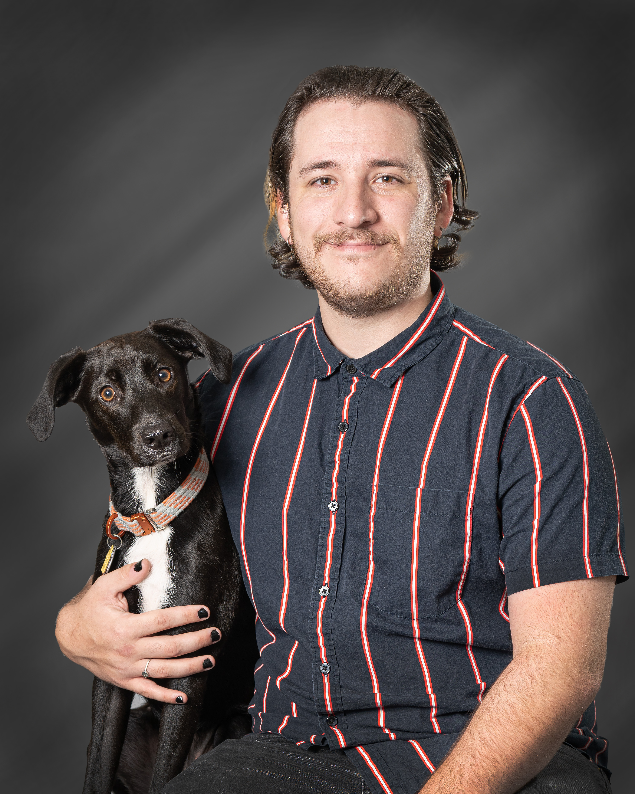

|  | ObjectiveDetail-oriented IT Coordinator with a strong foundation in technology and systems management, currently pursuing a degree in Software Engineering. Passionate about software development and eager to leverage technical skills and problem-solving abilities in an internship role. Seeking an opportunity to contribute to innovative projects, enhance programming expertise, and gain hands-on experience in developing efficient, scalable software solutions. |
IT Coordinator (August 2022 - Present)
Accomplishments:
Overview:
Oversee all aspects of information technology within an organization consisting of roughly 65 personnel. Guarantee the optimization of the network, computer systems, cameras, and additional equipment through consistent testing and preventive maintenance. Utilize HTML and CSS to design, create, and manage the organization's website. Assist with the development and design of user-friendly experiences. Manage CCTV through EPS On-going research and development of workplace automation using Microsoft's Power Automate.Software Utilized:
Information Technology Specialist (May 2022 - June 2022)
IT Analyst II (March 2020 - May2022)
Responsibilities: